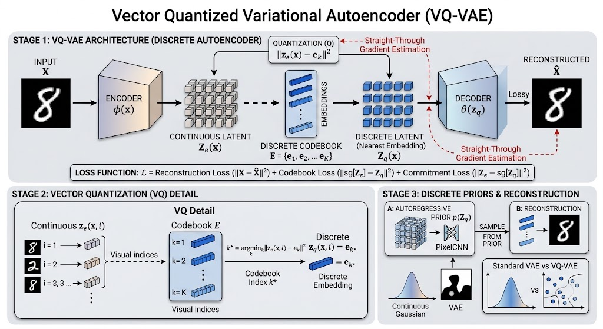

端到端離散化與生成式檢索：RQ-VAE 如何打造 Semantic ID Tokenizer

在生成式推薦的基石：Semantic ID 如何破解海量商品 Token 化難題中，我們確立了 Semantic ID（SID）的核心價值。為了解決傳統 Atomic ID 所引發的 Softmax 算力瓶頸與參數膨脹，我們必須將海量商品映射為大語言模型（LLM）易於表徵與生成的「長度為 $M$ 的階層式語意 Token 序列」。

提及「將語意離散化為 Token」，自然語言處理（NLP）領域成熟的 BPE 等 Tokenizer 往往是大家最先想到的標準範式。然而，推薦系統面對的標的截然不同。商品本質上是由文字描述、視覺圖像、層級類別與多維中繼資料交織而成的「多模態實體」，我們顯然無法直接套用文字為主的 Tokenizer。
這意味著我們需要一種全新的 Tokenizer。它必須具備深度的多模態理解能力，同時還能執行「階層式離散映射」，將連續的高維向量精準拆解為由粗到細、且涵蓋原始資訊的離散 ID，而RQ-VAE（Residual Quantized Variational AutoEncoder） 正是滿足這項嚴苛要求的理想架構。
本文將深入探討 RQ-VAE 的底層數學原理與工程設計，揭示其如何化解碼本維度災難、跨越不可微的數學鴻溝，並直擊實務落地時最棘手的「碼本崩塌」難題。
核心運作方式：從 AutoEncoder 到殘差量化
核心概念 Glossary：Codeword 與 Codebook
在深入殘差量化機制之前，我們先釐清向量量化（Vector Quantization）中的兩個關鍵基石概念：
- Codebook（碼本 / 字典）： 儲存所有離散向量原型的集合矩陣 $\mathbf{C} = \{e_1, e_2, \dots, e_K\}$。碼本的大小 $K$（如 $K=256$）決定了該層離散語意空間的字典容量。它是連接收緊「連續特徵空間」與「離散 Token 空間」的橋樑。
- Codeword（碼字 / 離散向量）： 碼本中儲存的各個離散向量原型 $e_k$。量化過程即是在 Codebook 中尋找與 Encoder 產出的連續特徵最相近的 Codeword，並將其對應的整數索引（Index）作為該階段的離散 Token 或 ID。
探究 RQ-VAE，我們必須先回顧其本質 AutoEncoder，以及其近親 VQ-VAE (Vector Quantized Variational AutoEncoder)。
AutoEncoder 的基礎架構由 Encoder 與 Decoder 組成，目標是將輸入資料（如文本、圖像）壓縮並生成低維的連續特徵向量（Embedding），再由 Decoder 嘗試無損重建。這套範式賦予了模型強大的語意壓縮與還原能力，為 RQ-VAE 奠定了理解多模態語意與生成 Semantic ID 的基礎。VQ-VAE 則在此基礎上邁出了關鍵一步：在 Encoder 產出連續向量後，系統會在預先定義的碼本中，尋找空間距離最近的 Codeword $e_1$ 並進行強制替換。這個將連續變數轉為離散原型的過程，即為「量化」。
$$\hat{x} = e_1$$

VQ-VAE 在處理有限詞表或低解析度圖像時表現極為出色。
那麼，為何我們不直接將 VQ-VAE 應用於生成式推薦系統中？
儘管它無法生成階層式的 Semantic ID，我們似乎仍可利用 VQ-VAE 將商品量化為有限的 Codeword，藉此在某種程度上緩解商品數量龐大與冷啟動的問題。
然而，現今主流電商的商品庫規模動輒數千萬件。若要確保每個商品都能擁有具備區分度的專屬 ID，我們至少需要一個容量高達上百萬的龐大碼本。這在工程上是一場維度災難：不僅會直接導致 GPU 記憶體溢出，極度龐大且稀疏的特徵空間也會使神經網路難以收斂。
反之，若為了遷就硬體限制將碼本強行縮減至 1 萬，便意味著平均每 1,000 個截然不同的商品將被迫共享同一個 ID。這種嚴重的語意碰撞，會導致每個 ID 的語意變得過於模糊。
為了解決「空間開銷與特徵解析度」的兩難，RQ-VAE 引入了極具巧思的「殘差量化（Residual Quantization）」機制：
- 化大為小： 摒棄單一龐大碼本，將其拆解為 $M$ 層極為輕量的「子碼本」，並由這 $M$ 個子碼本共同逼近並替換原本的連續向量。例如，建立 4 層大小僅為 256 的 Codebook。這不僅將每層碼本的詞彙表大小控制在極小範圍，更組合出了指數級別的表達空間。
- 殘差逼近： 為了滿足 Semantic ID 的「階層式」需求，第一層碼本會先捕捉最宏觀的主特徵。接著，系統將「原始連續特徵」減去「第一層量化特徵」，計算出尚未被表達的殘差（Residual）。第二層碼本接手擬合這個殘差，挑選出距離最近的向量；隨後再將剩餘的新殘差交給第三層……以此類推。每一層都在極力修補上一層的量化誤差，最終實現累積重構：
$$z_q = \sum_{m=1}^M e_{k_m}^{(m)}$$
這種由粗到細（Coarse-to-fine）的逼近過程，完美契合了人類對商品分類的樹狀邏輯。第一層 Token 決定了「3C 產品」的大類，第二層逼近殘差找到了「智慧型手機」，第三層鎖定「Apple 品牌」，第四層描繪出「高儲存容量」的細節屬性。
💡 空間維度的優勢
RQ-VAE 僅依靠 $256 \times 256 \times 256 \times 256$ 這 4 層極小的碼本就能組合出超過 42 億種獨特的表徵空間。這徹底突破了單碼本的硬體限制，使我們能以極低的記憶體開銷，為海量商品精準賦碼。
跨越不可微的鴻溝：STE 與損失函數
掌握 RQ-VAE 的結構與殘差量化機制後，我們接著拆解模型的訓練核心——看看這些元件如何協同運作，並實現端到端的聯合優化。
首先，RQ-VAE 作為 AutoEncoder，其核心任務依然是學習資料的有效壓縮表徵。為了確保 Encoder 降維後的特徵沒有遺失關鍵語意，模型必須要求 Decoder 能從這些特徵中精準還原出原始輸入。因此，其基礎損失函數必然包含 重構損失（Reconstruction Loss）：
$$\mathcal{L}_{\text{recon}}(x, \hat{x})$$
這個 Loss 確保了整個端到端系統的優化大方向是正確的。然而，由於 Decoder 依賴 Encoder 的輸出來還原輸入，若能讓 Encoder 與 Decoder 聯合優化，效果將會更佳。但此時我們會面臨一個嚴峻的數學挑戰。
在量化的過程中，模型必須對輸入向量與 Codeword 計算距離，並執行 $\arg\min$ 操作——亦即從 Codebook 眾多候選向量中，挑選出「能讓距離達到極小值」的那一個 Codeword 索引。然而，這種尋找極小值索引的 $\arg\min$ 是一個離散的階梯函數，其導數幾乎處處為零，這意味著它將阻斷反向傳播的梯度。Decoder 計算出的誤差因此無法穿透這個斷層，Encoder 也將無從得知該如何更新權重。
為了解開這個數學死局，RQ-VAE 採用了一個直觀且有效的技巧——Straight-Through Estimator (STE)。
STE 的梯度直通策略
STE 的運作邏輯相當直接：前向傳播維持離散運算，反向傳播則直接透傳梯度。
在前向傳播時，模型嚴格執行 $\arg\min$，提取離散的量化向量 $z_q$ 進行後續運算；但在反向傳播時，系統直接忽略 $\arg\min$ 的存在，假裝「量化」操作未曾發生，將 Decoder 傳回的梯度「原封不動」地傳遞給 Encoder 輸出的連續向量 $z_e$：
$$\nabla_{z_e} \approx \nabla_{z_q}$$
這個策略成功讓神經網路得以繼續端到端的訓練。但強行透傳梯度，卻衍生了兩個顯著的副作用：
- 碼本缺乏梯度更新： STE 將梯度直接「跨越」傳給了 Encoder，導致碼本裡的離散向量並未接收到任何重構梯度。如果不設定額外的優化目標，碼本將永遠停滯在初始狀態，完全不參與學習。
- Encoder 特徵空間不穩定： Encoder 雖然獲得了梯度，但它可能會過度改變特徵空間。若 Encoder 變動過於劇烈，即便碼本有在更新，也極可能無法跟上 Encoder 的位移速度。這會導致兩者距離逐漸擴大，最終使量化誤差徹底發散。
約束特徵空間的專屬損失函數
為了解決 STE 帶來的這兩大副作用，我們必須在基礎的重構損失之外，額外引入兩個與碼本高度相關的專屬損失函數，為特徵空間建立邊界約束，強迫連續向量與離散碼本「雙向對齊」。
- 碼本損失 (Codebook Loss, $\|\text{sg}[z_e] - z_q\|_2^2$)： 此處使用了
stop-gradient (sg)運算子來凍結 Encoder 的輸出。其目的是為碼本提供明確的更新方向，強迫 Codebook 中的離散向量主動去「貼近」Encoder 產生的連續特徵空間。如果不將 Encoder 的輸出暫時凍結，Encoder 與 Codebook 的雙向移動會導致目標不斷飄移（Moving Target），使梯度無法穩定收斂。 - 承諾損失 (Commitment Loss, $\beta \|z_e - \text{sg}[z_q]\|_2^2$)： 反向利用
stop-gradient (sg)凍結 Codebook。它約束 Encoder 的輸出不能漫無目的地發散，必須「承諾」於當前已建立的碼本分佈，避免特徵空間發生劇烈震盪。同樣的，如果不在此暫時凍結 Codebook，Encoder 可能會為了極力接近未收斂的 Codebook 而被拉扯歪斜，破壞原始輸入的語意表徵結構。
至此，我們便能統整出 RQ-VAE 完整的總損失函數：
$$\mathcal{L}_{\text{RQ-VAE}} = \mathcal{L}_{\text{recon}} + \alpha \mathcal{L}_{\text{codebook}} + \beta \mathcal{L}_{\text{commit}}$$
其中 $\alpha$ 與 $\beta$ 為超參數，控制著模型對碼本對齊程度的權重比例。
語意分層的底層約束：Depth Dropout 與視野封鎖
可是，既然所有碼本都在同一個端到端模型中，並透過 STE 接收完全相同的重構梯度，那 RQ-VAE 究竟是如何確保第一層必然捕捉「宏觀主特徵」，而後續層級僅負責「細節微調」？
實際上，這並非梯度的「偏好」，而是仰賴以下三大機制的巧妙協同：
-
變異數優先與 MSE 幾何懲罰：
第一層碼本直接面對完整未扣除的目標向量 $z$。在潛在空間中，宏觀特徵（如圖像輪廓、商品大類）佔據了最大的變異數與能量。由於重構損失採用均方誤差（MSE），而 MSE 對大偏差極為敏感，若第一層預測偏離了全域結構，誤差將呈二次方劇增。因此優化器會優先調整第一層碼本，使其貼近數據總體分布的中心（類似 PCA 的第一主成分）。
-
核心強制力：碼本深度丟棄 (Depth Dropout)：
如果每次訓練都將所有 $M$ 層碼本加總送入 Decoder，會產生嚴重的協同適應（Co-adaptation）：第一層可能會產生依賴性，預期後續層級會協助修正誤差，導致層級間的語意嚴重交織。為此，實務上（包含 SoundStream、EnCodec 等變體）會引入 Quantizer Dropout。訓練時，系統會以一定機率隨機截斷後續層級的輸出，強迫模型僅使用前 $k$ 層（甚至僅第 1 層）進行解碼。這直接改變了優化規則：第一層被迫在有限容量內獨立解碼出合理的宏觀特徵，徹底確立了「前綴可解碼性（Prefix Decodability）」。
-
前向路由的物理封鎖與「動態追趕」：
在前向傳播中，各層碼本的視野是截然不同的： Codebook 1 負責匹配原始向量 $z$；Codebook 2 被物理封鎖，只能觀測到殘差 $r_1 = z - e^{(1)}$。
這引發了非線性優化上的動態追趕效應（The Moving Target Effect）。一旦 Codebook 1 微幅調整更接近 $z$，殘差 $r_1$ 的分佈就會全面改變。這意味著 Codebook 2 始終在擬合一個動態目標，其前一輪學習到的特徵分佈可能瞬間失效。這種主從關係賦予了 Codebook 1 絕對的宏觀主導權，而後續碼本只能扮演填補殘差的輔助角色。
落地深水區：解剖與防禦「碼本崩塌 (Codebook Collapse)」
即便數學推導看似嚴密，但當工程師將 RQ-VAE 投入實際訓練時，依然會遭遇向量量化領域最棘手的難題：碼本崩塌 (Codebook Collapse)。
這源於 $\arg\min$ 操作所帶來的「馬太效應」。由於梯度只能透過 Codebook Loss 傳遞給距離最近的碼字，這意味著在每次更新中，僅有被命中的 Codeword 能獲得優化，其餘未命中的則停滯不前。
在訓練初期，這會引發嚴重的資源傾斜。少數恰好位於資料密集區的熱門節點，能持續獲得梯度回饋與優化資源；而遠離資料分佈區的邊緣節點，則因缺乏命中機會而永遠未被激活。
最終的結果是，一個大小為 256 的碼本，實際發揮作用的可能僅有 10 個 Codeword，剩餘的 246 個徹底淪為無效的死碼。這將導致產出的 Semantic ID 嚴重缺乏多樣性，失去區分海量商品的意義。
因此，為了提升碼本利用率，現代工程實務通常會強制部署三道防線：
- K-means 初始化 (K-means Initialization)： 捨棄傳統的隨機初始化。在模型訓練的最初幾個 Step，先讓 Encoder 產出一批特徵，對這些特徵執行真實的 K-means 聚類，並將 Codebook 的初始值直接綁定在聚類中心上。這為所有 Codeword 提供了一個貼近真實數據分佈的優良起點，避免了「從零開始」的隨機猜測，讓大部分碼本一開始就能參與到量化與優化中。
- EMA 動態更新 (Exponential Moving Average)： 放棄使用激進的標準梯度下降來更新 Codebook 權重，而是改用 Encoder 命中特徵的「滑動平均」來平滑調整碼本位置。EMA 宛如穩定的錨點，能有效吸收極端 Batch 帶來的數值震盪，使碼本的移動更為平滑穩健。
- 死碼重置 (Dead Code Revival)： 這是最後且最直接的保底機制。系統會持續監控每一個 Codeword 的命中頻率。一旦發現某個碼在設定的 Epoch 內活躍度為零，系統便會強行將其覆蓋到當前 Batch 中某個高度活躍的 Encoder 特徵點附近，並加入微小的雜訊干擾。這等同於強制喚醒閒置的參數，使其重新參與特徵空間的映射。

業界標竿：Google TIGER 架構剖析
理解了核心原理後，業界又是如何將其落地為高效的推薦系統呢？Google 在其經典論文 Recommender Systems with Generative Retrieval 中，清晰展示了生成式推薦模型與 RQ-VAE 結合的標準範式。整個架構劃分為兩大核心階段：
- 階段一：特徵到 ID（構建字典）
首先，利用預訓練的強大文本編碼器（如 Sentence-T5）萃取商品的純文字描述與屬性，形成高維的連續特徵。接著，將這些特徵送入搭載死碼防禦機制的 RQ-VAE 中，將其壓縮並離散化為具備階層的 Semantic ID（例如 [大類31, 次類88, 屬性102, 細節5]）。至此，庫存中的每一個商品都擁有了專屬的「語意 Token」。
- 階段二：ID 到推薦（序列學習）
此階段將推薦問題徹底轉化為 NLP 的生成任務。系統會將用戶歷史點擊、購買過的商品 Semantic ID 依時間先後串聯成一段序列，交由 Seq2Seq Transformer 進行自迴歸訓練。模型如同生成文本一般，透過上下文理解使用者的意圖，逐個 Token 預測出該用戶下一步最可能感興趣的商品 Semantic ID。
請注意：在這個階段，RQ-VAE 的權重是被「凍結 」的。它純粹扮演標準 Tokenizer 的角色，不再與 Seq2Seq 推薦模型進行聯合訓練。
架構權衡：RQ-VAE vs. RQ-Kmeans
值得一提的是，在架構選型上，業界並非沒有其他選擇。除了基於深度生成模型的 RQ-VAE (端到端神經量化)，另一種備受關注的重量級方案是幾何導向的 RQ-Kmeans (兩階段靜態幾何聚類)。

- RQ-VAE (端到端神經網路量化)：
- 優勢（高上限）： 語意對齊度極高。神經網路能動態調整潛在語意空間。模型學習出的特徵距離，比單純的數學幾何距離更貼近真實的商業場景語意。
- 劣勢（高維護）： 訓練成本較高，且必須與碼本崩塌、梯度截斷等問題長期對抗。高度依賴團隊的調參經驗與基礎設施完善度。
- RQ-Kmeans (兩階段靜態幾何聚類)：
- 優勢（高穩定）： 具備極高的工程效益。可直接利用既有的雙塔模型生成商品 Embedding，隨後在 CPU 上進行純粹的幾何殘差聚類。徹底避開了不可微梯度與死碼問題，能迅速發揮現有資產的價值，快速上線。
- 劣勢（鎖死上限）： 聚類結果為靜態。若第一階段取得的 Embedding 品質不佳，後續的 K-means 無論如何細緻切割，也無法挽回下游推薦任務的效能損失。
💡 實務混用策略 (Hybrid Strategy)： 為了結合兩者的優點，業界常見的 Best Practice 是採用「熱啟動」策略：先利用 RQ-Kmeans 離線聚類出穩健的初始碼本，作為 RQ-VAE 的初始化權重，藉此有效避免模型在訓練初期陷入死碼狀態，隨後再進行神經網路的端到端微調。這能完美兼顧幾何量化的穩定性與神經網路微調的效能天花板。
結語
生成式檢索的崛起，宣告了推薦系統正經歷一場從「向量點積」到「自迴歸生成」的典範轉移。然而，大語言模型（LLM）強大的推理與序列預測能力，必須建立在「高質量、具結構性」的離散詞表之上。對於結構複雜、屬性繁多的多模態商品而言，傳統 Tokenizer 顯然力有未逮。
RQ-VAE 完美填補了這道從連續特徵邁向離散表徵的技術斷層。它不單單是一項模型創新，更是一座精密的工程橋樑：它利用殘差量化粉碎了單一碼本的維度災難，透過 STE 梯度直通與雙向約束損失函數繞過了不可微的死胡同；在工程實務上，更以 EMA 與死碼重置 等機制死守住特徵空間的多樣性，徹底解決了碼本崩塌的隱患。
在 Google TIGER 等業界標竿架構中，RQ-VAE 已展現其作為「特徵轉 ID」離散化橋樑的關鍵價值——它能將複雜的多模態商品特徵，無縫轉譯為大語言模型（LLM）可直接理解與生成的高品質 Token 序列。因此，深刻掌握 RQ-VAE 背後「離散化降維」與「漸進式特徵逼近」的核心思維，將是工程師駕馭下一代生成式推薦系統不可或缺的基本功。
Review Kit
QA Generator Prompt
You are given a set of notes or an article.
Read and understand the content, then generate approximately 20 questions.
Requested question type(s): ["mcq"]
Most questions should be drawn directly from the material, focusing on key concepts, definitions,
and core ideas, while a smaller portion can be creative or application-based,
extending the material into real-world or novel scenarios but staying conceptually grounded.
Include a mix of difficulty levels—beginner, intermediate, advanced, and professional.
For each question, provide the question number, type (conceptual, application, analytical),
difficulty, topic, the correct answer, and a brief explanation.
If the requested question format requires options (for example MCQ), include the necessary answer choices.
Focus on clarity, relevance, and meaningful application, avoiding trivial or overly obscure details.You are given a set of notes or an article.
Read and understand the content, then generate approximately 20 questions.
Requested question type(s): ["mcq"]
Most questions should be drawn directly from the material, focusing on key concepts, definitions,
and core ideas, while a smaller portion can be creative or application-based,
extending the material into real-world or novel scenarios but staying conceptually grounded.
Include a mix of difficulty levels—beginner, intermediate, advanced, and professional.
For each question, provide the question number, type (conceptual, application, analytical),
difficulty, topic, the correct answer, and a brief explanation.
If the requested question format requires options (for example MCQ), include the necessary answer choices.
Focus on clarity, relevance, and meaningful application, avoiding trivial or overly obscure details.